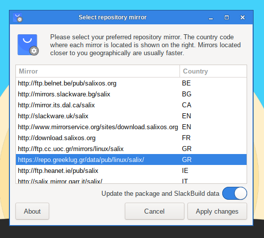

This tool can be used to to select your preferred repository mirror. The country code where each mirror is located is shown next to each entry. You should usually choose a mirror that is closer to you geographically, as they will be usually faster. Of course you can also use this tool when your preferred mirror goes temporarily offline to switch to another.

To execute this utility in a terminal, simply type
sudo reposetup